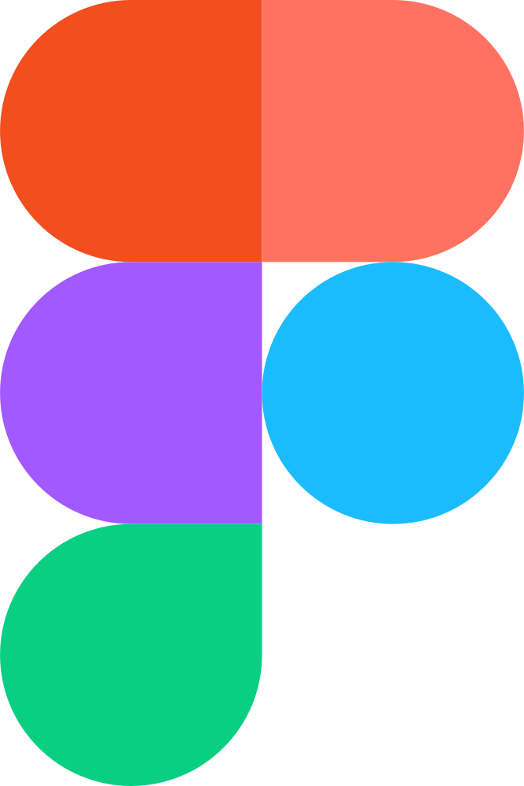

Scan-first library management designed for the reality of a busy school.
A decentralized school bike bus, built so no single parent can cancel it by accident.
Frictionless invoicing for freelancers — built around how people actually work.

Figma